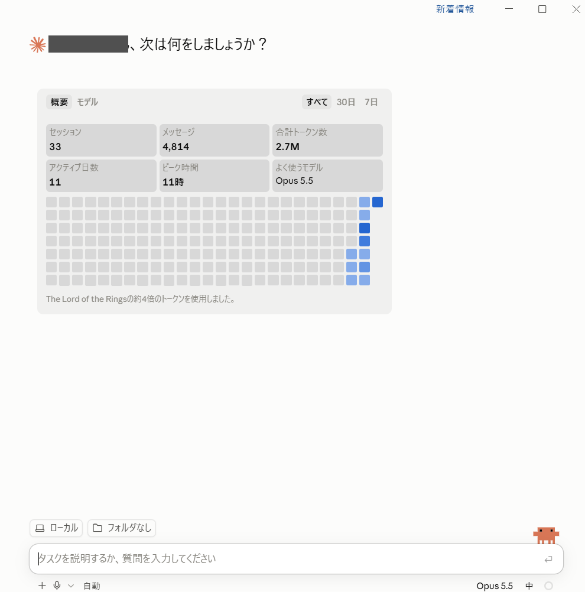
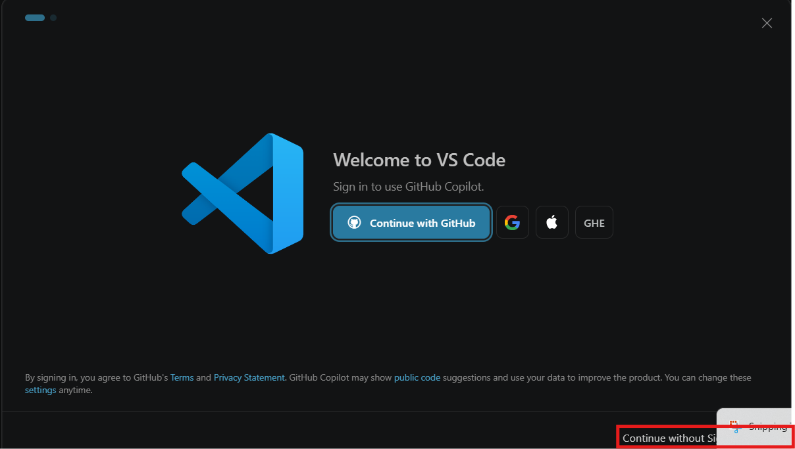
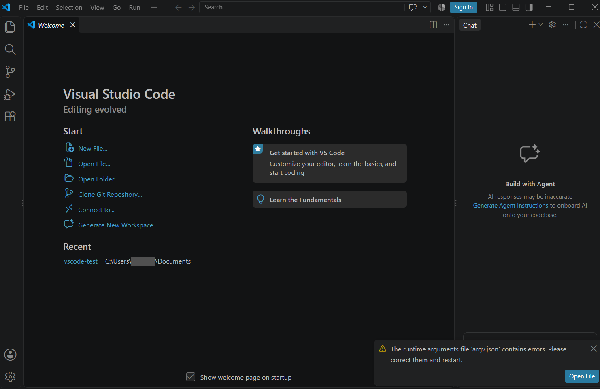
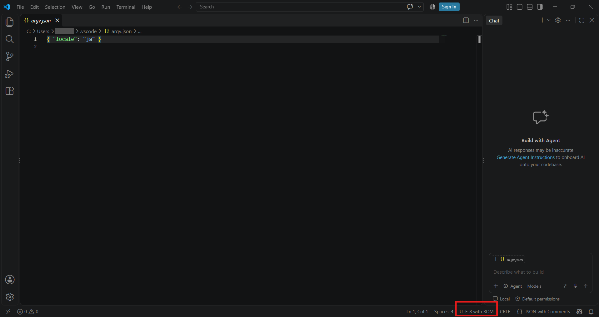
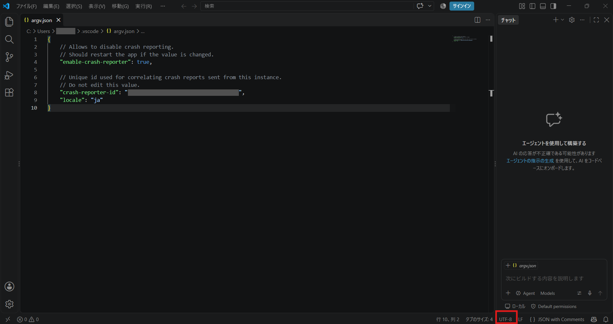
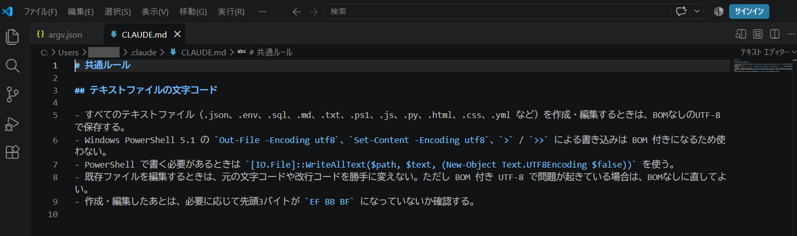
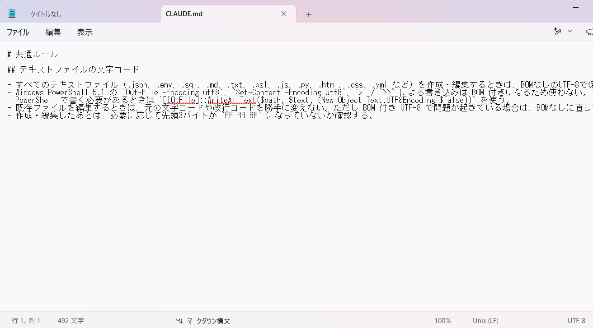

結論から言うと、今回のVS Codeのインストールは「苦労した」に尽きます。ただ、その苦労のおかげで、バイブコーディングで使える大事な学びをひとつ手に入れました。
メモ帳では最低限すぎた
先日、Supabase（アプリのデータを保存するサービス）の作業をしました。Claudeが出してくれたSQLや設定値を、いったんWindowsのメモ帳に貼ってから使っていました。
メモ帳はテキストを入力するには十分です。でも、コピペするだけならともかく、コードを編集するには最低限すぎると感じました。どこからどこまでが1つの命令なのか、全部同じ黒文字では分かりません。
「コードを書く人は、もっと便利なものを使っているのでは？」とClaudeに聞いてみたところ、挙がったのがVisual Studio Code（VS Code）でした。
なぜVS Code、なぜClaude Codeに任せたのか
VS CodeはMicrosoftが出しているアプリで、無料で使えます。普段使っているWindowsやOfficeと同じメーカーなら安心だし、ちょっと使ってみようと思いました。
せっかくなので、インストールもClaude Codeに任せてみることにしました。ダウンロードして、解凍して、インストールする。この一連の作業を自動化できれば楽だろう、という軽い気持ちです。
Claude Codeには、こう頼みました。
VS Codeと日本語化の拡張機能をインストールしてください。初心者なので、何をしているか一言ずつ説明しながら進めてください。

Claude Codeはコマンドを実行する前に「実行していいか」を確認してくれます。勝手にパソコンをいじられないのは安心です。ここまでは順調でした。
つまずきその1：サインインは右下の小さい文字で飛ばせる
VS Codeを起動すると、いきなり「Sign in to use GitHub Copilot」という画面が出ました。GitHubかGoogleのどちらでサインインすればいいのか、迷いました。
実はこのサインインは、MicrosoftのAI機能「GitHub Copilot」を使うためのものです。VS Code自体はサインインしなくても使えます。私はAIにClaude Codeを使うので、今回は不要でした。
飛ばし方は、画面の右下にある「Continue without Sign in」を押すだけです。大きな青いボタンに目が行くので、正直これは盲点でした。普通の初心者は気が付かないと思います。

つまずきその2：再起動しても日本語にならない
本当に激しくつまずいたのはここからです。日本語化の拡張機能を入れて、表示言語を日本語に切り替え、「Restart」を押しました。ところが、再起動しても英語のままです。
右下には「The runtime arguments file 'argv.json' contains errors.」というメッセージが出ていました。argv.jsonは、VS Codeが起動するときに読む設定ファイルです。表示言語の設定もここに書かれます。

開いてみると、中身は { "locale": "ja" } の1行だけ。書き方は正しいのに、なぜかエラーになります。
原因は、VS Codeの一番下のバー（ステータスバー）に表示されていました。右下に「UTF-8 with BOM」とあります。この「BOM」が犯人でした。

直し方は、その「UTF-8 with BOM」をクリックして「Save with Encoding」→「UTF-8」を選ぶだけでした。これでようやく日本語になりました。
ただ、ここでもうひとつまずき。VS Codeが元の設定を下に書き足したため、設定が2つのかたまりに分かれてしまいました。整理しようとして、今度は先頭の { まで消してしまいました。
でも、VS Codeは対になる相手がいない最後の } を赤く表示して、左下にエラー件数も出してくれます。おかげで「最初の記号が抜けている？」と自分で気づけました。{ を打ち直して保存し、左下が「⊗ 0」になって、ようやく完了です。

BOMって何？なぜ付いたの？
BOM（ボム）は、ファイルの一番先頭に付く、目に見えない小さな「しるし」です。「このファイルはUTF-8という文字の決まりで書かれています」と知らせる名札のようなものだそうです。
- BOMあり：
[見えないしるし]{ "locale": "ja" } - BOMなし：
{ "locale": "ja" }
画面ではどちらも同じに見えます。でもVS Codeは、この設定ファイルをBOMなしの前提で読むため、先頭のしるしを「知らない文字」と判断して設定を読めなかったのです。
なぜBOMが付いたのか。Claude Codeに聞いてみると、原因はClaude Code自身がファイルを作ったときの方法だったと、きちんと説明してくれました。
Windowsに最初から入っている古いPowerShell（バージョン5.1）では、「UTF-8で保存して」と指定するとBOM付きで保存されるのだそうです。昔からの仕様で、つまずく人が多いところだとか。
AIも間違えます。ただ、原因を聞けば自分のミスだと認めて、初心者にも分かる言葉で説明してくれます。このとき、BOMが付くデメリットを身をもって体験できたのは、結果的によかったと思っています。
再発防止：AIへの指示として覚えさせる
今回いちばん良かったのは、ここからです。これからSupabaseのキーを入れるファイルやSQLをClaude Codeに作ってもらう場面が増えます。同じ原因でまた動かなくなるのは避けたいところです。
Claude Codeには「CLAUDE.md」というルール帳を置けます。ユーザーフォルダの .claude\CLAUDE.md に書いておけば、どのフォルダで作業するときも毎回読んでくれます。
そこで、こう頼みました。
今後、JSONに限らず .env や .sql など、すべてのテキストファイルはBOMなしのUTF-8で保存するルールを追加してください。CLAUDE.md 自体もBOMなしで保存してください。
最後の一文は念のためです。ルール帳自体がBOM付きだったら笑えないので。
Claude Codeは、このファイルがすべての作業に影響するので勝手には書き換えない、と事前に確認してくれました。書き込んだあとは、ファイルの先頭を調べてBOMが付いていないことまで確かめていました。

バイブコーディングで起きたミスを、次から起きないようにAIへの指示として覚えさせられた。これが今回いちばんの収穫です。
同じファイルをメモ帳とVS Codeで比べてみた
せっかくなので、このCLAUDE.mdをメモ帳でも開いて比べてみました。

| メモ帳 | VS Code | |
|---|---|---|
| 見た目 | 全部同じ黒文字 | 見出しやコマンドが色分け |
| 赤い波線 | 英単語のスペルミスと誤判定 | 書き方の間違いを指摘 |
| エラー件数 | なし | 左下に表示 |
| 文字コード | 右下に表示 | 右下に表示、クリックで変更できる |
面白かったのは赤い波線です。メモ帳では IO.File や WriteAllText に波線が出ますが、これは英単語のスペルミスと勘違いしているだけです。VS Codeの赤線は「ここの書き方がおかしい」と教えてくれるもので、同じ赤線でも役割がまったく違います。
補足すると、Windows 11のメモ帳も文字コードの表示やタブに対応していて、ちょっとしたメモなら十分です。コードを扱うならVS Code、という使い分けが良さそうです。
まとめ
インストールを自動化して楽しようとしたら、思わぬところでつまずきました。それでも、得たものは大きかったと思います。
- VS Codeのサインインは不要。右下の小さい文字で飛ばせる
- 見た目が同じでも、見えない「BOM」で設定が読めなくなることがある
- AIのミスは、原因を聞いてCLAUDE.mdにルール化すれば再発を防げる
VS Codeのカラフルな表示は、これからコードを勉強するうえでも役に立つのではないかと期待しています。一度は挫折したプログラミングですが、色で区切って見せてくれるだけで、少し読めそうな気がしています。
次は、当初の目的だったSupabaseのSQLをVS Codeで扱ってみる予定です。